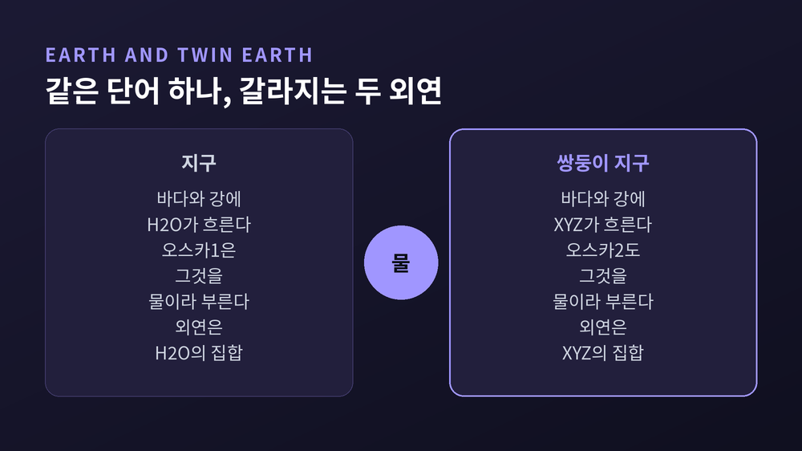
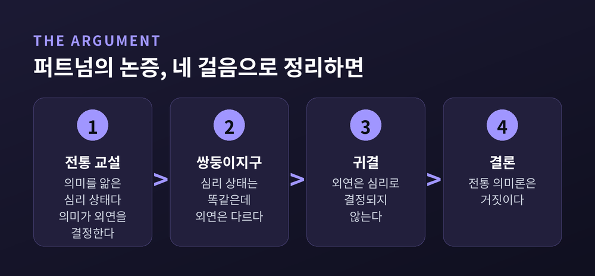

세 줄 요약
이번 글에서는 20세기 언어철학에서 가장 자주 인용되는 사고실험 하나를 정리해 보겠습니다. 힐러리 퍼트넘의 쌍둥이 지구입니다. 결론부터 말씀드리면, 이 논변이 겨눈 표적은 '물'이 아니라 의미가 개인의 마음속에 들어 있다는 오래된 전제였습니다.
힐러리 퍼트넘은 1926년에 태어나 2016년 3월 13일에 세상을 떠난 미국 철학자입니다. 하버드에서 대학원을 시작했지만 곧 UCLA로 옮겨, 나치 독일을 피해 망명한 논리실증주의자 한스 라이헨바흐 아래에서 공부했습니다.
그는 입장을 자주 바꾸는 철학자로도 유명합니다. 자신이 제안한 기능주의를 28년 뒤에 반박하는 책을 냈고, 1976년에는 '형이상학적 실재론'을 공격하며 내적 실재론을 내놓았습니다. 그 뒤로도 상식적 실재론, 직접 실재론, 실용주의적 실재론으로 계속 옮겨 다녔습니다.
쌍둥이 지구가 처음 등장한 글은 1973년 『철학 저널』 70권에 실린 「의미와 지시(Meaning and Reference)」입니다. 이를 대폭 확장한 것이 1975년의 「'의미'의 의미(The Meaning of 'Meaning')」로, 키스 건더슨이 편집한 『미네소타 과학철학 연구』 7권 『언어, 마음, 지식』에 131쪽부터 193쪽까지 실렸습니다. 같은 권에는 데이비드 루이스, 노엄 촘스키, 존 서얼의 논문도 함께 묶였습니다.
퍼트넘이 이 논문에서 무너뜨리려 한 것은 일반명사에 관한 전통 교설의 두 가지 가정입니다.
첫째, 어떤 용어의 의미를 안다는 것은 곧 어떤 심리 상태에 있는 것이다.
둘째, 용어의 의미가 그 외연을 결정한다.
따로 보면 둘 다 그럴듯합니다. 퍼트넘의 주장은 이 둘이 동시에 참일 수는 없다는 것이었습니다.
사고실험은 이렇게 시작합니다.
우주 어딘가에 쌍둥이 지구가 있습니다. 거의 모든 면에서 우리 지구와 같습니다. 태양처럼 보이는 별 주위를 돌고, 지구의 모든 사람과 사물에 대응하는 쌍둥이가 있습니다. 스탠퍼드 철학백과는 이 설정을 더 강하게 씁니다. 그곳의 당신의 쌍둥이는 분자 대 분자로 동일한 복제본입니다.
차이는 딱 하나입니다. 그곳의 바다와 강과 수도꼭지에서 나오는 액체는 물이 아닙니다. H2O가 아니라 XYZ라는 다른 화합물입니다. 수소와 산소로 되어 있지 않고, 지구에는 아예 없는 원소들로 이루어져 있습니다.
그런데 XYZ는 보이고, 맛보이고, 만져지는 것이 물과 완전히 똑같습니다. 쓰임새도 같습니다. 그곳 사람들도 자기 언어를 '영어'라 부르고, XYZ를 'water'라고 부릅니다.
여기까지는 평범한 공상과학입니다. 논변의 급소는 다음 한 줄에 있습니다.
이 사고실험의 시점은 1750년입니다.
물질에 분자 구조라는 것이 있다는 생각조차 없던 때입니다. 1750년의 지구인도, 쌍둥이 지구인도 자기가 '물'이라 부르는 것이 H2O인지 XYZ인지 알 방법이 없었습니다. 퍼트넘은 두 과학 공동체가 서로 같은 단어를 다르게 쓰고 있다는 사실을 알아차리는 데 50년쯤 걸렸을 것이라고 덧붙입니다.
이제 지구의 전형적인 영어 화자를 오스카1, 쌍둥이 지구의 대응자를 오스카2라 부릅니다. 둘은 외모도 느낌도 생각도 내적 독백까지 동일합니다. 오스카1이 물에 대해 가진 믿음 가운데 오스카2가 'water'에 대해 갖지 않은 믿음은 하나도 없습니다. 무색이고, 투명하고, 맛이 없고, 갈증을 풀어 준다 — 두 사람이 떠올리는 목록은 글자 하나까지 같습니다.
질문은 이것입니다. 두 사람이 각각 "물은 젖어 있다"고 말할 때, 둘은 같은 것을 뜻하는가.
퍼트넘의 답은 아니오입니다. 지구에서 'water'의 외연은 H2O 분자로 이루어진 것들의 집합이고, 쌍둥이 지구에서는 XYZ 분자로 이루어진 것들의 집합입니다. 같은 소리를 내는 하나의 단어가 두 개의 외연을 갖는 셈입니다.
스탠퍼드 철학백과는 여기에 한 겹을 더합니다. 두 발화는 둘 다 참이지만, 참으로 만드는 사실이 서로 다릅니다. 진리조건이 다른 것입니다.

용어 하나를 두 방향에서 볼 수 있습니다.
내포는 그 용어가 가리키는 것들이 공통으로 가진다고 여겨지는 속성들입니다. 사실상 정의에 가깝습니다. '책'의 내포는 앞뒤 표지가 있고 그 사이에 여러 쪽이 묶여 있는 것입니다.
외연은 그 용어가 실제로 적용되는 대상들의 집합입니다. '책'의 외연은 세상에 있는 모든 실제 책입니다. 사전도, 소설도, 신학대전도 거기 들어갑니다.
프레게 이래의 그림에서 이 둘은 한 방향으로 연결되어 있었습니다. 뜻이 지시를 결정한다. 머릿속에 그 개념을 제대로 가지고 있으면, 그 개념이 세상의 어느 것을 가리키는지도 함께 정해진다는 것입니다.
퍼트넘이 1975년 논문에 추가한 개념이 이 연결을 끊어냅니다. 그는 심리 상태를 둘로 나눕니다.
좁은 심리 상태는 머리 바깥에서 벌어지는 일을 전혀 고려하지 않고도 판정할 수 있는 상태입니다. 넓은 심리 상태는 그 상태를 누군가에게 귀속시키는 일이 머리 바깥의 사실을 함축하는 상태입니다. 예컨대 "x가 y를 질투한다"는 최소한 y가 존재한다는 것을 함축합니다. 질투는 넓은 상태입니다.
모든 심리 상태가 좁은 상태라는 전통적 견해에 퍼트넘이 붙인 이름이 방법론적 유아론입니다. 여기에 "의미를 아는 것은 심리 상태다"를 결합하면 "의미는 머릿속에 있다"가 자동으로 따라 나옵니다. 퍼트넘이 겨눈 것은 바로 이 결합입니다.
논증은 네 걸음으로 정리됩니다.

쌍둥이 지구는 세 사례 중 하나일 뿐입니다. 퍼트넘은 두 가지를 더 듭니다.
알루미늄과 몰리브덴. 알루미늄 냄비와 몰리브덴 냄비는 전문가가 아니면 구별하지 못한다고 가정합니다. 쌍둥이 지구에서는 두 단어가 뒤바뀌어 있습니다. 화학이나 야금학에 소양이 없는 두 오스카의 심리 상태에는 아무 차이가 없습니다. 그런데도 한쪽의 'aluminum'은 알루미늄을, 다른 쪽의 'aluminum'은 몰리브덴을 가리킵니다. 물 사례와 다른 점이 하나 있습니다. 이 혼동은 언어 공동체의 일부에서만 일어납니다. 전문가는 구별할 수 있으니까요.
느릅나무와 너도밤나무. 이 사례에서 퍼트넘은 자기 자신을 실험 대상으로 올려놓습니다. 그는 느릅나무와 너도밤나무를 구별하지 못한다고 고백합니다. 두 나무에 대한 그의 심상은 동일합니다. 그럼에도 그의 개인어에서 'elm'의 외연은 다른 모든 사람의 'elm'의 외연과 같습니다. 모든 느릅나무의 집합입니다.
개념은 구별되지 않는데 외연은 구별됩니다. 그렇다면 그 구별을 만들어 낸 것은 그의 심리 상태가 아닙니다.
여기서 저 유명한 문장이 나옵니다.
"파이를 어떻게 자르든, '의미'는 머릿속에 있지 않습니다."
그렇다면 외연은 무엇이 고정하는가. 퍼트넘의 적극적 답이 언어적 노동의 분업입니다.
그는 이 분업이 비언어적 노동의 분업 위에 서 있고, 그것을 전제한다고 말합니다. 일반명사에 결부되어 있다고 여겨지는 것들 — 외연에 속하기 위한 필요충분조건, 판별 방법 — 은 언어 공동체를 하나의 집합적 신체로 놓고 보면 모두 존재합니다. 다만 그 신체가 아는 노동과 쓰는 노동을 나눠 갖고 있을 뿐입니다.
'금'이라는 말을 생각해 보시면 됩니다. 순금을 판별하는 기준을 아는 사람은 극소수입니다. 나머지 사람들의 사용은 그 하위 집단과의 구조화된 협력에 기대어 성립합니다.
그래서 퍼트넘의 결론은 단호합니다. 노동 분업의 대상이 되는 용어를 습득하는 평균적 화자는 그 외연을 고정할 만한 것을 아무것도 습득하지 않습니다. 외연을 고정하는 것은 개인의 심리 상태가 아니라, 화자가 속한 집합적 언어 신체의 사회언어학적 상태입니다.
그러면 머릿속에 남는 것은 무엇일까요. 퍼트넘은 그것을 고정관념이라 부릅니다. 어떤 종류의 것에 전형적이거나 정상적인 특징들에 대한 표준화된 기술입니다. 금이 노랗다는 것, 호랑이가 줄무늬라는 것이 그렇습니다. 다만 이것들은 분석적 진리가 아닙니다. 대상을 집어내는 실마리를 줄 뿐, 외연에 속하기 위한 필요충분조건을 주지는 못합니다.
퍼트넘은 자연종 명사에 지표적 성분이 숨어 있다고 봅니다. '물'은 최초의 명명 맥락에서 손가락으로 가리킨 그 액체를 뜻합니다. "이것이 물이다"라는 지시적 정의가 기준 표본을 정하고, 이후 다른 시간·다른 장소·다른 가능세계의 무엇이든 그 표본과 '같은 액체' 관계를 맺어야 물이 됩니다.
그러니 쌍둥이 지구의 'water'는 물이 아닙니다. 우리 표본과 그 관계를 맺지 못하기 때문입니다.
같은 시기에 사울 크립키도 비슷한 곳에 도착해 있었습니다. 『이름과 필연』은 1970년 1월 20일, 22일, 29일 프린스턴대 철학 콜로퀴엄에서 행한 세 번의 강연입니다. 강연록에 각주와 부록을 붙인 판이 1972년 도널드 데이비슨과 길버트 하먼이 엮은 『자연언어의 의미론』에 실렸고, 새 서문을 단 단행본은 1980년에 나왔습니다.
크립키는 3강에서 고정지시어 개념을 '물', '금', '호랑이' 같은 자연종 명사로 확장합니다. 자연종 명사가 고정적이라면 "물은 H2O이다" 같은 동일성 진술은 참이기만 하면 필연적으로 참입니다. 그런데 그것을 아는 길은 경험적 탐구뿐입니다. 필연적이면서 후험적인 진리, 곧 후험적 필연입니다.
퍼트넘 자신이 두 이론의 관계를 이렇게 정리합니다. 자연종 명사가 고정지시어라는 크립키의 교설과 그것들이 지표어라는 자신의 교설은 같은 논점을 말하는 두 가지 방식이라고요.
전통 의미론이 빠뜨린 것은 두 가지였습니다. 사회의 기여, 그리고 실제 세계의 기여입니다.
여기서 논의는 언어철학을 넘어갑니다.
콜린 매긴과 타일러 버지가 지적한 확장 경로는 이렇습니다. 믿음을 귀속시킬 때 우리는 "~라고 믿는다"는 절을 씁니다. 그 절의 의미가 곧 믿음의 내용입니다. 그런데 두 쌍둥이가 발화한 문장의 의미가 다르다면, 두 사람의 믿음의 내용도 다르다고 볼 수밖에 없습니다. 믿음은 내용에 의해 개별화되니까요.
버지가 1979년 논문 「개인주의와 심적인 것」에서 든 사례는 물이 아니라 관절염입니다.
래리는 몇 년째 발목과 손목에 관절염을 앓고 있습니다. 어느 날 허벅지가 불편하자 "관절염이 허벅지로 번졌다"고 믿습니다. 관절염은 관절에만 생기는 병이니 이 믿음은 거짓입니다. 그런데도 우리는 그것을 관절염에 관한 믿음이라고 부릅니다. 래리가 'arthritis'를 특정 방식으로 쓰는 공동체 안에 살고 있고, 의사가 바로잡아 주면 수긍할 용의가 있기 때문입니다.
이제 래리의 생리적 이력도, 행동도, 신체 구성도 그대로 두고 언어 공동체만 바꿉니다. 그 공동체에서는 의사와 사전편찬자와 유능한 일반인이 'arthritis'를 여러 류머티스성 질환에까지 적용합니다. 이 상황에서 래리의 허벅지 믿음은 참입니다. 그러나 그것은 더 이상 관절염에 관한 믿음이 아닙니다.
퍼트넘의 차이가 자연 환경에서 왔다면, 버지의 차이는 언어 관행에서 옵니다. 그래서 버지의 것을 사회적 외재주의라 부릅니다.
한 가지 짚어 둘 것이 있습니다. 퍼트넘은 1975년에 쌍둥이들의 심리 상태는 같고 지시만 다르다고 했습니다. 버지는 1982년 「다른 신체들」에서 심리 상태 자체가 다르다고 논박했습니다. 오스카는 H2O 개념을, 쌍둥이 오스카는 XYZ 개념을 갖는다는 것입니다. 퍼트넘은 나중에 버지의 해석에 동의를 표했습니다.
이 논변이 합의된 결론이라고 말씀드릴 수는 없습니다. 반론의 목록이 깁니다.
존 서얼은 XYZ도 물이라고 봅니다. 우리 물이 H2O임을 알게 되었을 때 우리에게는 두 선택지가 있었습니다. 'water'를 H2O로 재정의하거나, 투명하고 젖는 기본 속성만 있으면 무엇이든 물이라 부르게 두거나. 서얼은 쌍둥이 지구에서는 후자가 더 그럴듯하다고 봅니다. 쌍둥이 아이스크림은 구성이 다르겠지만 우리는 여전히 그것을 아이스크림이라 부르고 싶을 테니까요.
폴 보고시안은 다른 각도에서 찌릅니다. 우리는 세상을 조사하지 않고도 자기 생각의 내용을 안다고 여깁니다. 특권적 자기지식입니다. 그런데 외재주의가 맞다면 내 생각의 내용은 머리 바깥이 결정합니다. 그는 물 비슷한 것이 아예 없는 '마른 지구'를 상정해 이 긴장을 더 조입니다.
제리 포더는 범위를 제한하는 쪽을 택합니다. 퍼트넘식 논변이 통하는 것은 넓은 내용이고, 그와 별개로 좁은 내용이 있다는 것입니다. 1987년의 정식화에서 좁은 내용은 맥락을 넣으면 넓은 내용을 내놓는 함수입니다. 다만 그것이 구체적으로 무엇인지는 특정할 수 없습니다.
방법론 자체를 문제 삼는 흐름도 있습니다. 커민스와 촘스키는 믿음의 본성은 사고실험이 아니라 경험적 연구로 밝혀야 한다고 봅니다. 실험철학 진영은 이런 직관이 문화상대적이고 유동적이라고 지적합니다. 대닛은 쌍둥이 지구 같은 장치를 직관 펌프라 불렀습니다. 생각하는 사람의 직관이 설계자가 원하는 방향으로 흐르도록 만들어진 장치라는 뜻입니다.
존 뒤프레는 자연종 이론 자체를 겨눕니다. 쌍둥이 지구가 뒷받침한다고 여겨지는 자연종 이론은 실제 과학의 분류 관행에서 지지받지 못한다는 것입니다.
퍼트넘 본인도 물러선 대목이 있습니다. 존 맥도웰은 퍼트넘이 여전히 마음을 뇌에 본떠 머릿속에 놓는 그림에 붙들려 있다고 비판했고, 퍼트넘은 이를 인정하고 신아리스토텔레스적 마음관 쪽으로 옮겨 갔습니다.
스탠퍼드 철학백과가 붙이는 교정도 중요합니다. "의미는 머릿속에 없다"는 표현은 다소 과장된 정식화였다는 것입니다. 올바른 결론은 심리 상태의 위치가 아니라 개별화에 관한 것입니다. 데이비슨이 든 비유가 선명합니다. 햇볕에 탄 피부는 태양이라는 바깥 요인에 의해 무엇인지가 정해집니다. 그렇다고 그것이 피부 바깥에 있는 것은 아닙니다.
끝으로 한 마디만 더 드리겠습니다.
이 사고실험을 처음 접하면 XYZ라는 설정에 눈이 갑니다. 그러나 오래 남는 것은 물이 아니라 1750년이라는 시점입니다. 아무것도 모르던 두 사람이 이미 서로 다른 것을 가리키고 있었다는 주장 말입니다.
예전에는 말의 뜻을 정확히 하려면 머릿속 개념을 더 또렷하게 다듬으면 된다고 생각했습니다. 지금은 조금 다르게 봅니다. 뜻의 상당 부분은 애초에 내가 소유한 적이 없습니다. 그것은 내가 속한 공동체와 내가 발 딛고 선 세계에 나뉘어 맡겨져 있습니다.
그러니 이 논변이 남긴 질문은 하나로 모입니다 — 내가 안다고 여기는 그 말의 뜻은, 과연 어디까지 내 것인가.
느릅나무와 너도밤나무를 구별하지 못한 채로도 우리는 평생 그 이름을 정확히 쓰며 살아갑니다. 그 사실이 이상하지 않다면, 퍼트넘의 논점은 이미 절반쯤 받아들여진 셈입니다.